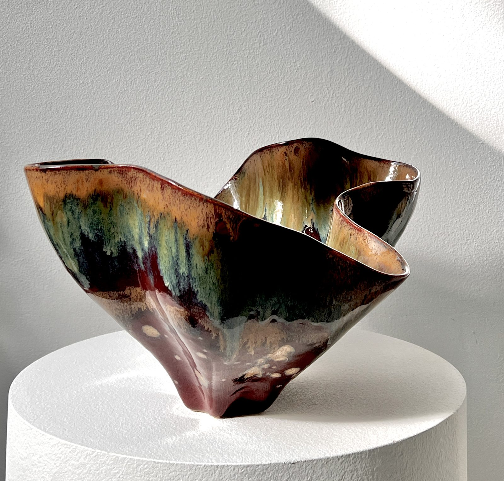

MADART FOUNDATION
live

Natalia Wyspianska →
Terra no 5
MAISONDARTISTE-NW-11 · updated today
€ 1.550,–
available
Inquire via WhatsApp →
View full catalogue — Natalia Wyspianska
100% of the sale proceeds go to the artist.
Natalia Wyspianska works independently, without gallery representation.
Instagram — @_natelier_